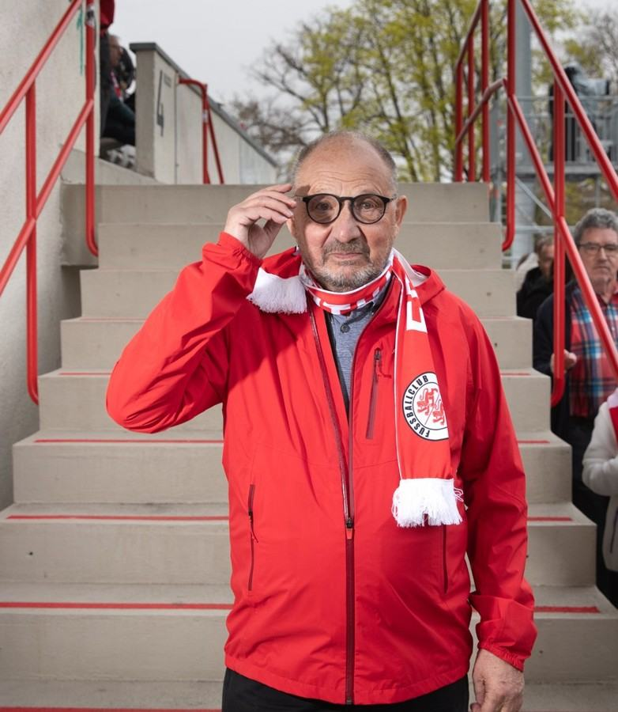

Selber entdecken
Wo rollt die Kugel schneller? Was passiert an der Kurve? Kinder beobachten, probieren und finden ihre eigenen Wege.
Wer spendet, soll wissen, was mit dem Geld passiert. Darum zeigen wir die Kosten und den Fortschritt so offen wie möglich.
Unser erstes Spendenziel beträgt CHF 5’000. Mit diesem Geld wollen wir gemeinsam mit dem Forstdienst der Stadt Winterthur die ersten Kugelrinnen umsetzen. Wir beginnen mit den verfügbaren Mitteln; wie viele und welche Baumstämme bearbeitet werden können, klären wir anhand des tatsächlich gesammelten Betrags. Die folgende Aufteilung ist unsere Budgetplanung. Konzept- und Kommunikationsarbeit leisten wir freiwillig.
| Position | Geplantes Budget |
|---|---|
| Handwerkliche Umsetzung: erste Rinnen in geeigneten Stämmen | CHF 4’200 |
| Werkzeug, Kleinmaterial und Holzkugeln | CHF 350 |
| Webhosting, Domain, E-Mail-/Kontaktverwaltung (Anteil) | CHF 200 |
| RaiseNow-/TWINT- und weitere Zahlungsgebühren (Budgetannahme) | CHF 150 |
| Mögliche Bankkontospesen und Überweisungsgebühren | CHF 50 |
| Kommunikation und Reserve | CHF 50 |
| Erstes Ziel | CHF 5’000 |
Zahlungsgebühren sind im Ziel von CHF 5’000 berücksichtigt (vorläufig CHF 150, entsprechend 3 %). Dazu sind CHF 50 für mögliche Bankspesen und CHF 50 Reserve eingeplant. Die tatsächlichen Gebühren hängen von der gewählten RaiseNow-/TWINT-Lösung, den Zahlungsmethoden und der Anzahl Spenden ab. Die Aufteilung richtet sich nach der tatsächlichen Umsetzung und den anfallenden Kosten.
Falls mehr Spenden eingehen als für die ersten Arbeiten benötigt, prüfen wir zusätzliche geeignete Kugelrinnen oder weitere sinnvolle Elemente. Die Verwendung wird transparent ausgewiesen und berücksichtigt die Zweckbindung der Spenden.
Es geht nicht um eine grosse Attraktion. Es geht um einen Ort, an dem Kinder aus eigenem Antrieb spielen und immer wieder Neues ausprobieren.
Wo rollt die Kugel schneller? Was passiert an der Kurve? Kinder beobachten, probieren und finden ihre eigenen Wege.
Eine Kugelbahn bringt Kinder zusammen: gemeinsam starten, warten, tauschen und einander etwas zeigen.
Die Bahn kann ein Anlass sein, wieder öfter in den Wald zu gehen – ohne Bildschirm, einfach draussen.
Das sind mögliche Spiel- und Erlebnisqualitäten, keine wissenschaftlich gemessenen Wirkungen dieses Projekts.

Wir haben die genannten Personen für eine mögliche Stimme zur Chügelibahn angefragt. Nora Ernst und Daniel Fehr haben ihre Aussagen bereits bestätigt. Bei den übrigen Personen sind die aufgeführten Formulierungen ausschliesslich redaktionelle Entwürfe: Sie stammen nicht von den Personen und sind weder als Zitat noch als Unterstützung bestätigt. Die Porträtfotos der neu angefragten Personen werden nach Klärung der Bildrechte ergänzt.
Bestätigte Stimme – Zitat persönlich freigegeben.

«Meine Kinder sind grosse Chügelibahn-Fans. Bisher kennen wir sie nur aus den Ferien - eine in Winterthur zu haben wäre grossartig.»
Aussage noch nicht bestätigt – Textentwurf, nicht von der Person geäussert.

Matteo ist in Winterthur stark verwurzelt. Als langjähriger Badmeister im Wolfensberg kennt er viele Familien aus der Stadt.
Formulierungsidee (nicht geäussert): Er kennt viele Menschen in Winterthur und weiss, wie wertvoll Treffpunkte für Familien sind.
Bestätigte Stimme – Zitat persönlich freigegeben.

«Wenn die Kugel einmal rollt, gibt es kein Halten mehr! Eine Reise beginnt – genauso fest in der Bahn wie im Kopf. Ich wünsche mir, dass Kinder am Walcheweiher ihrer Fantasie freien Lauf lassen können. Vielleicht ist die Chügelibahn ein Anstoss für sie, selbst kreativ zu werden und eigene Bahnen zu bauen.»
Aussage noch nicht bestätigt – Textentwurf, nicht von der Person geäussert.

Als bekanntes Winterthurer Gesicht steht Beni für die Verbundenheit mit der Stadt. Ein kleiner Spielort im Wald ist eine Idee, an der viele Generationen Freude haben können.
Formulierungsidee (nicht geäussert): Eine kleine Kugel kann in Winti viel Freude ins Rollen bringen.
Aussage noch nicht bestätigt – Textentwurf, nicht von der Person geäussert.

Bewegung, gemeinsames Spielen und Platz für alle Kinder: Darum geht es bei dieser Idee. Sarah Akanjis Verbindung zum Winterthurer Sport macht sie zu einer spannenden Stimme dafür.
Formulierungsidee (nicht geäussert): Draussen zusammen spielen verbindet.
Aussage noch nicht bestätigt – Textentwurf, nicht von der Person geäussert.
Draussen aktiv sein, sich bewegen und mit anderen zusammen etwas erleben – diese Werte passen zu einer naturnahen Chügelibahn und zu Samir Leuppis Verbindung zum Sport.
Formulierungsidee (nicht geäussert): Mehr Bewegung und Spiel für die nächste Generation.
Aussage noch nicht bestätigt – Textentwurf, nicht von der Person geäussert.

Kreativität entsteht oft dort, wo Menschen Freiraum haben. Auch ein einfacher Ort im Wald kann Kindern neue Ideen, Begegnungen und Freude am Entdecken schenken.
Formulierungsidee (nicht geäussert): Freiraum für Fantasie – mitten in Winterthur.
Aussage noch nicht bestätigt – Textentwurf, nicht von der Person geäussert.

Foto: © Mareycke Frehner
Ursula Bienz ist mit dem Figurentheater Winterthur verbunden: Geschichten, Spielen und Fantasie sind auch Themen der Chügelibahn.
Formulierungsidee (nicht geäussert): Ein kleiner Anstoss kann grosse Fantasie wecken.
Aussage noch nicht bestätigt – Textentwurf, nicht von der Person geäussert.

Bruno Hächler begeistert Familien mit Kinderliedern und Geschichten. Seine Perspektive auf spielerisches Entdecken wäre eine schöne Ergänzung.
Formulierungsidee (nicht geäussert): Kinder brauchen Raum für eigene Entdeckungen.
Von der Idee bis zur Website: Viel Zeit und Arbeit schenken wir diesem Projekt. Planung, Gespräche vor Ort, Texte, Kommunikation und Organisation machen wir freiwillig. Die Spenden sollen vor allem die Arbeit an der Kugelbahn und die nötigen Ausgaben decken.
Wir möchten transparent zeigen, wofür die Spenden eingesetzt werden. Deshalb lassen wir unsere Projektabrechnung unabhängig prüfen.
Das ist für unser ehrenamtliches Projekt eine grosse Hilfe. Herzlichen Dank an Steven Büchi und die PRT Revisions & Treuhand AG für diese freiwillige Unterstützung.
Steven Büchi, dipl. Treuhandexperte und zugelassener Revisionsexperte bei der PRT Revisions & Treuhand AG in Winterthur, hat zugesagt, unsere Projektabrechnung nach Abschluss kostenlos zu überprüfen.
Nach Abschluss des Projekts erstellen wir einen kurzen Bericht über die eingegangenen Spenden und die tatsächlichen Ausgaben. Die Abrechnung wird zuvor unabhängig geprüft. Den Bericht senden wir unseren Spenderinnen und Spendern per E-Mail zu, sofern uns ihre E-Mail-Adresse vorliegt.
Ja. Die Idee und der Standort wurden mit dem Forstdienst der Stadt Winterthur vor Ort besprochen und vorabgestimmt. Der Forstdienst hat Bereitschaft signalisiert, die handwerklichen Arbeiten zu übernehmen. Die konkrete Auswahl der Stämme, der Umfang und allfällige formelle Schritte werden vor dem Baubeginn geklärt. Es ist eine private Initiative, kein offizielles Projekt der Stadt Winterthur.
Falls sich das Projekt nicht wie geplant umsetzen lässt, prüfen wir zunächst, ob eine kleinere Ausführung möglich ist. Wenn kein sinnvoller Projekteinsatz möglich ist, sollen die zweckgebundenen Spenden zurückerstattet werden.
Wir dokumentieren alle Spendeneinnahmen und Projektausgaben nachvollziehbar. Die freiwillige Organisation des Vereins verursacht keine Personalkosten. Die Spenden setzen wir für die Chügelibahn ein, insbesondere für die handwerkliche Umsetzung durch den Forstdienst Winterthur und weitere notwendige Projektkosten. Die Abrechnung wird nach Projektabschluss unabhängig durch Steven Büchi von der PRT Revisions & Treuhand AG geprüft. Den Abschlussbericht mit Einnahmen und Ausgaben erhalten unsere Spenderinnen und Spender per E-Mail, sofern uns ihre Adresse vorliegt.
Ja. Du kannst die Petition unterstützen, die Idee teilen und später eventuell mit freiwilliger Arbeit, Material oder Kontakten helfen.
Im Spendenformular kannst du TWINT als Zahlungsart wählen. Danach bestätigst du die Zahlung wie gewohnt in deiner TWINT-App. Die Spende wird über RaiseNow abgewickelt.
Wir können aktuell keine steuerliche Abzugsfähigkeit zusichern. Eine Spendenbestätigung ist vorgesehen; ob ein Steuerabzug möglich ist, hängt von der anerkannten Trägerschaft und den jeweiligen Steuervorschriften ab.
Je mehr Menschen von der Idee erfahren, desto besser. Teile die Seite mit Freund:innen, Familien, Quartiervereinen und Menschen, die sich für Winterthur engagieren.